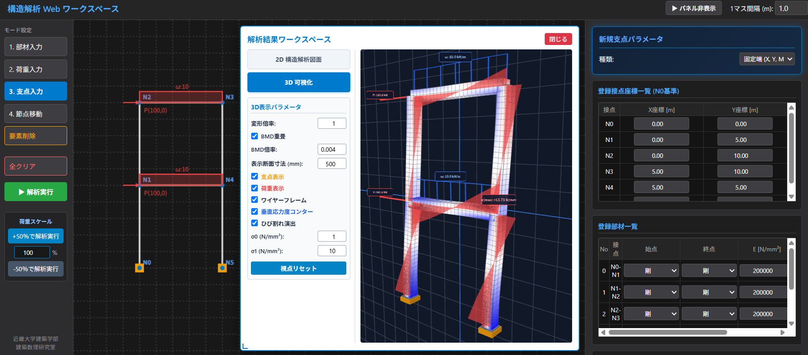
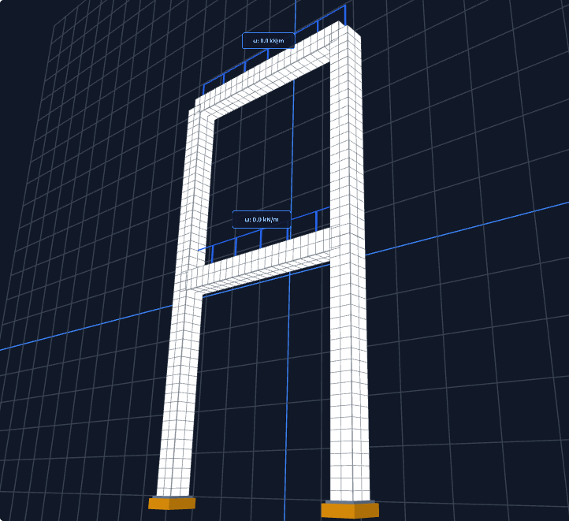
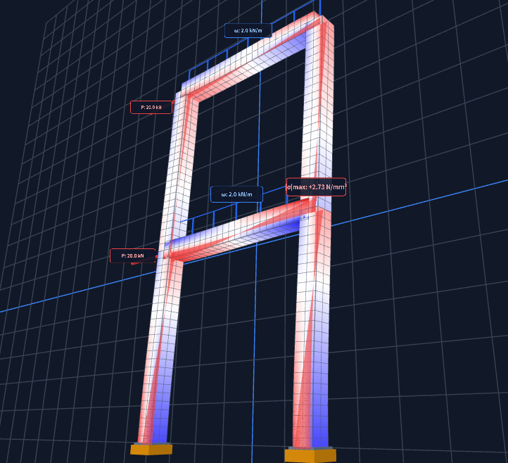
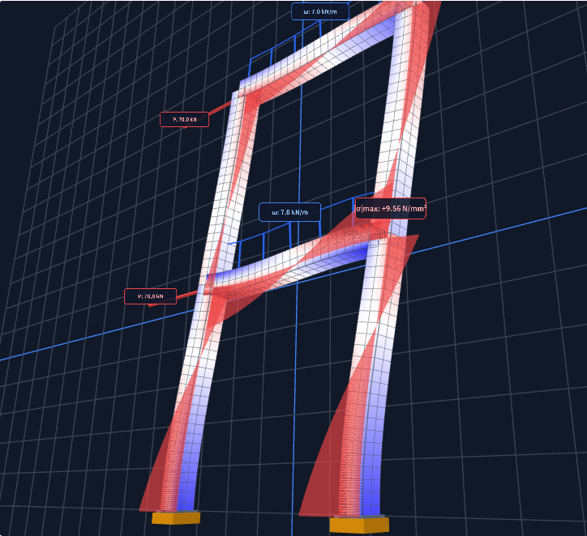
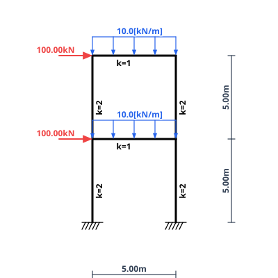
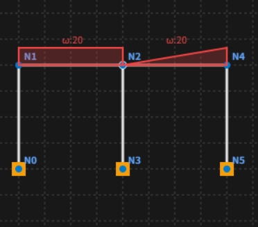
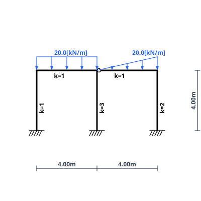
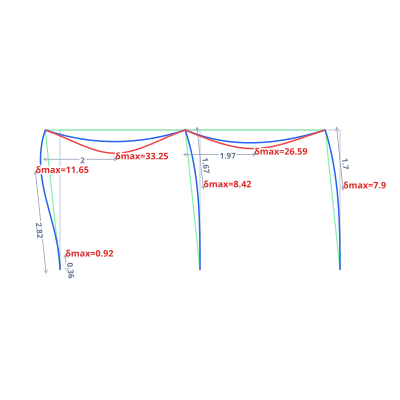
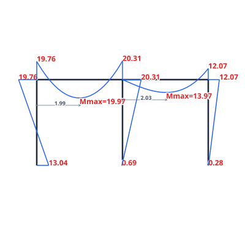

大学・高専の構造力学講義における教員の問題作成・学生の理解度向上を補助する教育専用ツール
本ソフトウェアは、大学・高等専門学校の建築学における「構造力学」「構造解析学」の講義・演習を担当される教員を支援するために開発された教育専用デスクトップツールです。学生が手計算（たわみ角法や固定法）で学ぶ剛比・剛度ベースの理論値と整合するUIや解析エンジンを備え、2次元の直感的なモデリングから、3次元空間で線材の垂直応力度コンター（引張・圧縮の明瞭な分離）、さらには演習・講義資料作成用のベクトル図面（SVG/PNG）を即座に生成します。インターネット接続を一切必要としない完全ローカル環境で動作し、講義室での即応的な実演や演習作成にも安心してご活用いただけます。
インストーラー初回起動時に画面に表示される「マシン識別コード（16桁）」を添えて ライセンス申請 より申請いただければ、個別ライセンスファイル（.lic）を速やかに発行いたします。
本ソフトウェアは大学研究室による学術・教育目的の独自ツールの性質上、一般の商用ソフトのような有償の企業認証（コード署名証明書）を省略しております。そのため、初回起動時にWindowsの画面が青くなり「WindowsによってPCが保護されました」という警告が表示される場合がございます。悪意あるプログラムやウイルス等は一切含まれておりませんので、以下の2ステップでそのまま実行してください。
.exe を起動してください。初回起動時は同様の画面が出ますが、上記と同じ手順でそのまま実行いただけます。
教育現場に特化することで実現した「思考を妨げない軽快さ」と「教科書理論との一致」
| 比較項目 | 本システム（2次元フレーム簡易解析） | 商用汎用FEM解析ソフト | 表計算・手計算用自作シート |
|---|---|---|---|
| モデリング所要時間 | 〜数分（グリッド直感クリック） | 数分〜（入力項目が多い） | 骨組が変わるたび方程式の組み直しが必要 |
| 手計算理論との一致性 | 一致（剛度 K=I/L、軸変形無視） | 軸変形やせん断変形の混入に注意 | 一致するが図面化や可視化が困難 |
| 3次元応力度可視化 | 標準搭載（引張赤・圧縮青・BMD重畳） | 可能だが設定が極めて煩雑で講義向きでない | 不可（平面グラフ・数値表のみ） |
| 講義・演習問題の作図 | 問題図・M図・変形図をワンクリックSVG出力 | CAD等での再トレース・清書作業が必要 | Excelグラフ等の切り貼りに留まる |
| 動作環境・機密性 | 完全オフライン・通信0（授業中も安全） | 高額ライセンス認証サーバー常時必須 | オフライン可能 |
学生から「もし中央の柱をピンにしたら？」「梁の剛性を2倍にしたら反力はどう変わるか？」と問われた際、講義を中断することなく数クリックで形状を変更し、変形図やM図の変化をその場で投影・検証できます。
実務用FEMソフトでは部材諸元の厳密な入力が必須であるため、教科書の「部材剛比 k」という抽象化された手計算問題を扱うにはデータ入力作業がやや煩雑となります。本ツールは「剛度入力モード（軸変形自動無視）」を備えており、手計算の模範解答と一致します。
スパン寸法線、支点記号、荷重ベクトルがSVGで自動製図されます。内蔵の「SVG編集モード」により、画面上で文字位置の微調整や不要な注記の消去、数値の書き換えを行ってそのままWord等へベクター貼り付け可能です。
講義現場での実演および演習問題作成を滞らせない直観的なワンウィンドウ設計

1.0mグリッド（設定変更可）上にマウスで節点・部材を配置。支点条件（固定端・ピン・ローラー）や節点剛結・ピン接合も視覚的に即時指定可能。
節点集中荷重、モーメント荷重、部材に対する等分布荷重、等変（三角）分布荷重を即座に付与。（＊台形分布には未対応）
直接剛性法（マトリクス変位法）による線形弾性解析を実行。変形形状、端部曲げモーメント、反力を即時に演算・展開。
荷重増加に伴う変形・応力分布の推移と、出題用モデル図の対比

① 無載荷（初期形状）
応力・変形ゼロ

② 中荷重載荷
$|\sigma|\text{max} = 2.73\text{N/mm}^2$

③ 大荷重（水平変形）
柱脚ひび割れ演出

わずかなマウス操作入力から「問題図 → 詳細変形図 → 曲げモーメント図」が一瞬で生成される実例
「問題図の作成」と「解答図の作成」：本ツールなら、キャンバス上で部材・荷重をクリック配置するだけで、寸法入りの演習問題図から、部材端部ピン接合、分布荷重による部材たわみの補正（理論曲線を2分割3次ベジェ曲線にあてはめ）、放物線ピーク曲げモーメントまでが完全に自動展開されます。




直接剛性法（マトリクス変位法）に基づく定式化と簡明なデータスキーマ
| 動作環境 | Windows 10 / 11 (64bit) デスクトップネイティブ |
| 通信要件 | 完全オフライン動作（外部通信一切なし） |
| 解析手法 | 直接剛性法（マトリクス変位法）、線形弾性微小変形理論 |
| 節点自由度 | 3自由度/節点（水平変位, 鉛直変位, 回転角） |
| 対応荷重 |
・節点集中荷重、モーメント ・等分布荷重、等変分布荷重（＊台形には未対応） |
| 剛性入力モード |
・剛度入力（K=I/L、軸変形無視） ・詳細入力（E, I, A 指定） |
| 変形・応力図の作成 |
・たわみ：5次理論曲線を2分割3次ベジェ曲線でSVGとして高精度表示 ・N,Q,M：理論通りの曲線をSVG表示 |
| 境界・端部条件 | 固定端、ピン支点、ローラー支点 / 剛接合、ピン接合 |
本ソフトウェアは、節点座標・部材・荷重条件を構造化されたJSON形式で入出力可能です。生成AIに対して「高さ4m・スパン6mの門型ラーメン、梁に等分布荷重20kN/mを付与するJSON」と指示することで、自然言語プロンプトから骨組モデルを一瞬でインポートできます。
※ 課題の生成スクリプトや研究室内のモデル共有にもそのまま活用いただけます。
構造力学教育の根幹は、学生自身が手計算（力の釣合式、曲げモーメント図の作図、たわみ角法の連立方程式）を通じて「力の流れや変形を感覚として身につける学習プロセス」にあります。
もし本ツールが無秩序に学生間へ拡散された場合、自ら手を動かして試行錯誤する前に安易な答え合わせツールとして利用されてしまい、結果として力学の本質的な教育効果を損なう恐れがあります。そのため、本ソフトウェアは大学・高専等の講義担当教員（専任・非常勤）に限定して無償提供し、学生への直接配布はお断りしております。